Illusion of Labyrinth (Español)
Quest Principal
| Requisitos | |
|---|---|
| Nivel Base: | 170 |
| Lugar de Inicio: | prt_maze01 99/31 |
| Recompensas | |
| Experiencia: | Ninguna |
| Items: | Permite crear equipo Illusion |
- La quest inicia dentro de Hidden Maze dungeon en
prt_maze01 99/31. Puedes llegar ahí usando el Warper > Illusion Dungeons > Illusion of Labyrinth. - Habla con Irene y escucha su historia. Selecciona This will be easy para aceptar su quest. Tendrás que hablar con el Guild Leader.
- 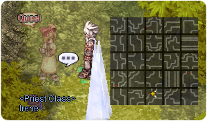
- Ve cerca de
prontera 212/320y Esmeralda aparecerá. Habla con ella e infórmale sobre la situación actual. - Habla con Esmeralda nuevamente dentro de Hidden Maze (Warper > Illusion Dungeons > Illusion of Labyrinth). Selecciona Huh... well, okay" y luego That's alright".
- Ingresa al dungeon de Illusion of Labyrinth haciendo click en Twisted Crack y seleccionando Go over the crack.
- Se te pedirá encontrar los rastros de 4 cuerpos de los miembros de la guild que desaparecieron. Sus ubicaciones serán visibles en tu minimapa. También deberás caminar cerca de ellos para hacerlos visibles.
- Rastros de Andrea:
- 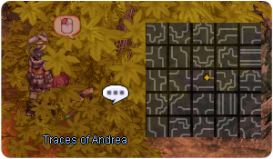
- Rastros de Silvano:
- Rastros de Cecilia:
- 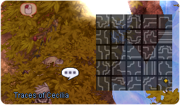
- Rastros de Anes:
- Rastros de Andrea:
- Una vez hayas terminado, regresa al Hidden Maze dungeon. Habla con Esmeralda y selecciona Alright, I'll leave for a bit. Serás enviado afuera del dungeon una vez mas.
- Vuelve a entrar al dungeon. Esta vez, todos los miembros de la guild aparecerán.
- Habla con Andrea y selecciona What are my benefits? y luego Let's do it!.
Has desbloqueado todas las Quest diarias!


Quests Diarias
Training Requests
| Requisitos | |
|---|---|
| Nivel Base: | 170 |
| Lugar de Inicio: | prt_maze01 97/21 |
| Recompensas | |
| Experiencia: | 43,750,000 (Base) y 28,437,500 (Job) por quest |
| Items: | Diferente para cada quest. |
- Habla con Andrea y acepta su petición.
- Una vez hayas completado cualquiera de todas las quest, puedes hablar con Silvano para obtener tus recompensas.
Andrea's Revenge 1
- Deberás cazar 5 Chaotic Baphomet Junior.
- Regresa con Silvano. Serás recompensado con 4
 Illusion Stone y algo de experiencia.
Illusion Stone y algo de experiencia.
Andrea's Revenge 2
- Deberás cazar 2 Chaotic Ghostring.
- Regresa con Silvano. Serás recompensado con 4 Illusion Stone y algo de experiencia.
Anes's Revenge 1
- You will need to hunt 5 Chaotic Hunter Flies.
- Regresa con Silvano. Serás recompensado con 4 Illusion Stone y algo de experiencia.
Anes's Revenge 2
- Deberás cazar 5 Chaotic Killer Mantis.
- Regresa con Silvano. Serás recompensado con 4 Illusion Stone y algo de experiencia.
Silvano's Revenge 1
- Deberás cazar 5 Chaotic Mantis.
- Regresa con Silvano. Serás recompensado con 3
 Pretty Little Candle y algo de experiencia.
Pretty Little Candle y algo de experiencia.
Silvano's Revenge 2
- Deberás cazar 5 Chaotic Poporing.
- Regresa con Silvano. Serás recompensado con 3
 Medicinal Bag y algo de experiencia.
Medicinal Bag y algo de experiencia.
Cecilia's Revenge 1
- Deberás cazar 5 Chaotic Side Winder.
- Regresa con Silvano. Serás recompensado con 3
 Cold Holy Water y algo de experiencia.
Cold Holy Water y algo de experiencia.
Cecilia's Revenge 2
- Deberás cazar 3 Chaotic Stem Worm.
- Regresa con Silvano. Serás recompensado con 3
 Small Flashlight y algo de experiencia.
Small Flashlight y algo de experiencia.
Purification
| Requisitos | |
|---|---|
| Nivel Base: | 170 |
| Lugar de Inicio: | prt_maze01 97/25 |
| Recompensas | |
| Experiencia: | 62,500,000 (Base) y 40,625,000 (Job) |
| Items: | Diferente para cada quest. |
- Habla con Anes y acepta sus quests.
- Tendrás que cazar a uno de los siguientes mob dependiendo de la quest que hayas recibido (es aleatorio):
- Chaotic Andrea, recompensa: 10 Pretty Little Candles
- Chaotic Anes, recompensa: 10 Medicinal Bags
- Chaotic Silvano, recompensa: 10 Cold Holy Waters
- Chaotic Cecilia, recompensa: 10 Small Flashlights
- Chaotic Andrea, recompensa: 10
- Regresa con Silvano para recibir tu recompensa.
Daily Quest Reset
Como mecánica exclusiva de NovaRO, puedes reiniciar los cooldowns de tus daily quests.
Esto significa que eres capaz de farmear cuantas Illusion Stones quieras con un único personaje, sin necesidad de crear personajes adicionales para evitar los cooldowns de las quests.
Para reiniciarlos, habla con Osmundi. Puedes encontrarlo dentro de cada Illusion Dungeon en las siguientes ubicaciones:
- Illusion of Moonlight .
- Illusion of Vampire .
- Illusion of Frozen .
- Illusion of Abyss .
- Illusion of Teddy Bear .
- Illusion of Luanda .
- Illusion of Labyrinth .
- Illusion of Underwater .
Los reinicios se separan en 3 categorías distintas acorde al grupo de dificultad en que cada dungeon se encuentra. Cada reset te recompensará con una cantidad determinada de Illusion Stones:
- Categoría 1: Illusion of Moonlight, Illusion of Vampire e Illusion of Frozen.
- Recompensa al resetear: 12 Illusion Stone
- Recompensa al resetear: 12
- Categoría 2: Illusion of Abyss, Illusion of Teddy Bear e Illusion of Underwater - Primer Piso.
- Recompensa al resetear: 18 Illusion Stone
- Recompensa al resetear: 18
- Categoría 3: Illusion of Luanda, Illusion of Labyrinth e Illusion of Underwater - Segundo Piso.
- Recompensa al resetear: 24 Illusion Stone
- Recompensa al resetear: 24
El primer reinicio del día, para cada grupo, te otorgará 6 Illusion Stone adicionales.
Una vez completes las dailies de cualquiera de las categorías de arriba, puedes reiniciar las daily quest de dicha categoría. Tras reiniciarlas, las quests no volverán a dar mas experiencia hasta que haya transcurrido el tiempo para su reinicio normal.
Cada categoría puede ser completada y reiniciada por separado, pero no puedes reiniciar las dailies de un Illusion Dungeon en particular sin haber completado las otras dailies de su respectiva categoría.
MVP Spawn
Para invocar al MvP Chaotic Baphomet, tendrán que matarse 1500 mobs en el dungeon. Habrá un anuncio global en el mapa en cuanto aparezca.
Mob
| Imagen | Monstruo | Nivel | HP | Tamaño / Raza / Elemento |
|---|---|---|---|---|
| 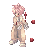 | Chaotic Andrea | 177 | 1,057,547 | Medium / Demi-Human / Neutral 4 |
| 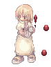 | Chaotic Anes | 177 | 1,057,444 | Medium / Demi-Human / Neutral 4 |

|
Chaotic Silvano | 177 | 1,057,650 | Medium / Demi-Human / Neutral 4 |

|
Chaotic Cecilia | 177 | 1,056,411 | Medium / Demi-Human / Neutral 4 |
| 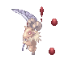 | Chaotic Baphomet Jr. | 177 | 1,057,444 | Small / Demon / Shadow 1 |

|
Chaotic Side Winder | 176 | 961,531 | Medium / Brute / Poison 1 |

|
Chaotic Hunter Fly | 175 | 1,045,087 | Small / Insect / Wind 2 |

|
Chaotic Mantis | 174 | 1,039,216 | Medium / Insect / Earth 1 |

|
Chaotic Ghostring | 173 | 1,033,446 | Medium / Demon / Ghost 2 |
| 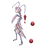 | Chaotic Killer Mantis | 177 | 1,058,167 | Medium / Insect / Earth 1 |

|
Chaotic Poporing | 173 | 1,032,638 | Medium / Plant / Poison 3 |

|
Chaotic Stem Worm | 172 | 1,027,071 | Medium / Plant / Wind 1 |

|
 Chaotic Baphomet |
178 | 21,278,744 | Large / Demon / Shadow 3 |
Cartas
| Carta | Va en: | Efecto |
|---|---|---|
| Accessorio |
| |
| Botas |
CRIT +1 por cada 15 puntos base de AGI. En combo con | |
| Escudo |
Reduce el daño recibido de monstruos propiedad Poison en 15%. | |
| Escudo |
Reduce el daño recibido de monstruos propiedad Wind en 15%. | |
| Accessorio |
STR + 3. En combo con | |
| Arma |
ATK + 20. En combo con | |
| Accessorio |
Incrementa el daño crítico en 3%. En combo con | |
| Escudo |
Reduce el daño recibido de monstruos propiedad Water en 15%. | |
| Garment |
HIT + 10. | |
| Armadura |
ATK + 25%. |
Equipo
Habla con Esmeralda (prt_fild01 141/367) en la entrada del Hidden Maze dungeon.
Para cada objeto, te pedirá Illusion Stones, un Equipo Base (que puede requerir cierto nivel de refine) y objetos varios que caen por drop dentro del dungeon.
Aquí puedes encontrar los objetos que puedes crear, su efecto y que piden para ser fabricados:
| Objeto | Nombre | Descripción | Creación |
|---|---|---|---|

|
 Illusion Morpheus's Hood [1] Illusion Morpheus's Hood [1]
|
Int +10, MDEF +15, Max SP + 20%.
Int +5, Max SP +10%, DEF +100.
Defensa: 15 Ubicación: Upper Peso: 20 Nivel Mínimo: 130 Equipable por: Todos los Job. |
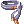 +7 Morpheus's Hood
|

|
Illusion Morpheus's Shawl [1] |
Max SP +10%, MDEF +5.
Defensa: 8 Peso: 60 Nivel Mínimo: 130 Equipable por: Todos los Job. |
|

|
Illusion Morpheus's Ring [1] | Int +3, Max SP +5%.
Reduce el tiempo de casteo variable en 10%.
Defensa: 0 Peso: 10 Nivel Mínimo: 130 Equipable por: Todos los Job. |
 Morpheus's Ring Morpheus's Ring
|

|
 Illusion Morpheus's Bracelet [1] Illusion Morpheus's Bracelet [1]
|
Int +3, Max SP +5%.
MATK +10%.
Defensa: 0 Peso: 10 Nivel Mínimo: 130 Equipable por: Todos los Job. |
|

|
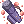 Illusion Butcher [2] |
Incrementa el daño físico de rango un 2% cada 15 puntos de Str base.
ATK +10%.
Ataque: 210 Peso: 250 Nivel del Arma: 4 Nivel Mínimo: 120 Equipable por: Gunslinger classes. |
|

|
 Illusion Tae Goo Lyeon [2] Illusion Tae Goo Lyeon [2]
|
Perfect Dodge +10.
Incrementa el daño físico de rango un 3%.
Ataque: 250 Peso: 200 Nivel del Arma: 4 Nivel Mínimo: 120 Equipable por: Swordsman third classes. |
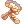 150 Short Binding Ropes |

|
 Illusion Gold Lux [2] Illusion Gold Lux [2]
|
HIT +10.
ATK +30.
Ataque: 160 Peso: 180 Nivel del Arma: 4 Nivel Mínimo: 120 Equipable por: Gunslinger classes. |
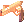 +7 Gold Lux
|

|
 Illusion Bazerald [2] Illusion Bazerald [2]
|
INT +5, MATK +170.
MATK +50.
Ataque: 120 Peso: 50 Propiedad del Arma: Fire Nivel del Arma: 4 Nivel Mínimo: 120 Equipable por: Swordsman classes, Archer classes, Thief classes, Mage classes, Merchant classes, Ninja classes, Soul Linker classes. |
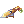 +7 Bazerald
|
 100
100  +7
+7  100
100  100
100  4
4 
 100
100 


 +7
+7  150
150 

 +7
+7 


 150
150 


 150
150